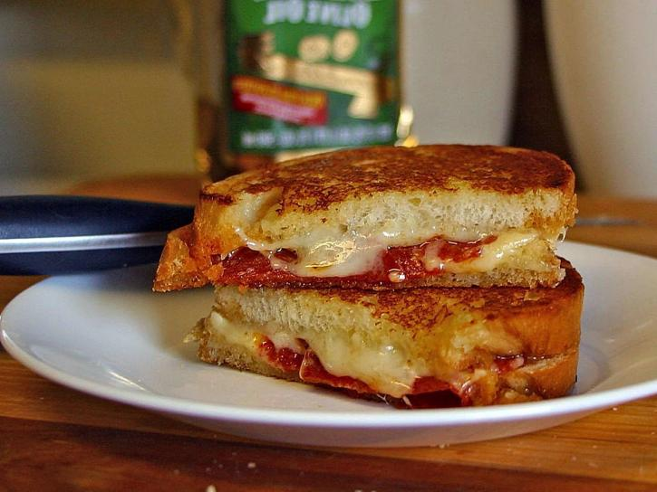

Sandwiches and Lunch Options
The featured sandwich was my first PHX creation several years ago. I decided I was bored with the same old grilled cheese and decided to add turkey bacon (optional) to my sandwich and then decided to add seasoning to the butter on the bread. It is EVERYONE's favorite in my family and my circle of friends. I hope you enjoy it as well!
